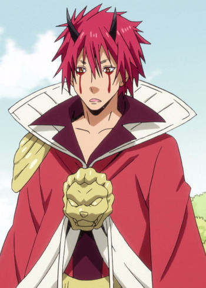
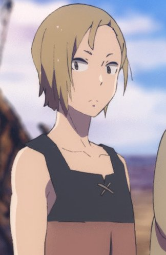

|  |
Benimaru |
- That Time I Got Reincarnated as a Slime
|
Benimaru is a Kijin becoming Rimuru's most powerful subordinate. He has a carefree personality, that of an confident man. He is really cautious and cunning as well. Benimaru feels hesitant when faced the responsibility. |
 |
Gustaf |
- The Seven Deadly Sins
- The Seven Deadly Sins OVA
- The Seven Deadly Sins: Revival of The Commandments
|
Gustaf is a Ruby ranked Holy Knight and Jericho's older brother. He is very loyal and concern for his sister's safety. He has no confidences for his sister. |
 |
Hiroto Suwa |
|
Hiroto Suwa is a friend of Naho. He is very energetic and outgoing. He loves to hang out with his friends. He has a crush on Naho. |
 |
Rider of Red |
|
Rider of Red is the Rider-class servant of Shirou Kotomine of the Red Fraction in the Great Holy Grail War. His true name is Achilles, one of broad-minded and audacious, often displaying a carefree smile on his face. Archer of Black was his teacher. |
 |
Taiju Ooki |
|
Taiju Ooki is a friend of Senku and Yuzuriha. He has a strong and sturdy body and helps Senku with carrying heavy items. He is very enthusiastic even for little tasks snd screaming a lot. He is still outgoing, friendly, loyal and kind person. He is very determine when something is important to him. He is a pacifist despite his great strength. He is greatly admires his best friend, Senku and easily impressed by Senku's invention. |
|  |
Tobi |
- Children of the Whales
- Children of the Whales Specials
|
Tobi is young man who lives on the Mud Whale with his siblings and Chakuro. He care greatly for his younger sibling and holds a great deal of responsiblity. He is easily frustrated when people act immature. |


.jpg)